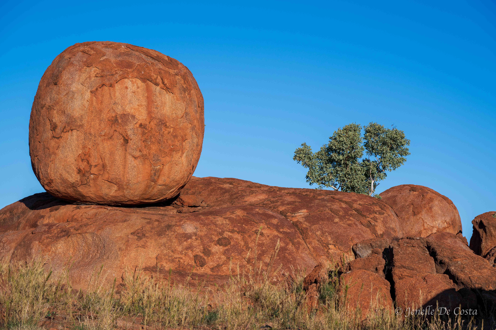
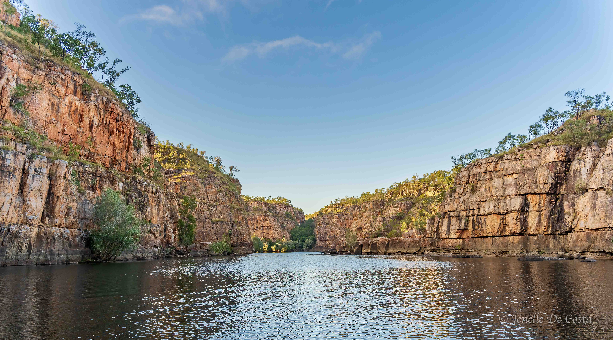
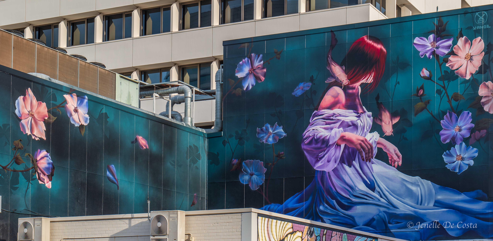
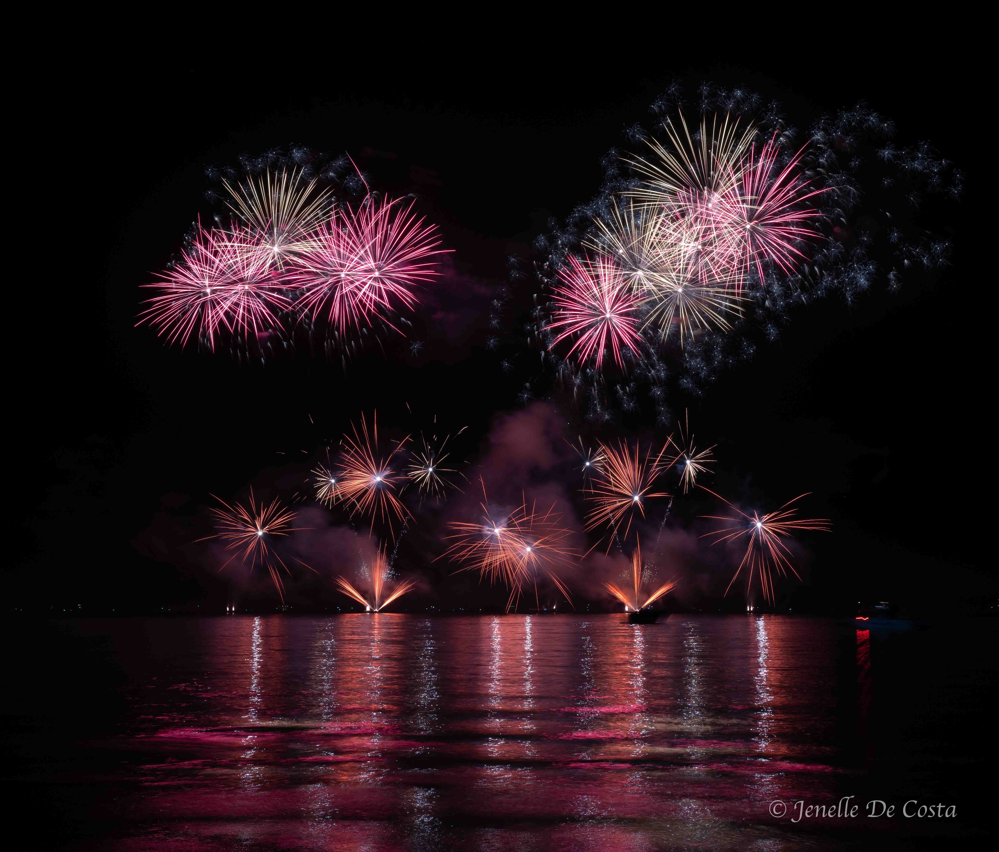
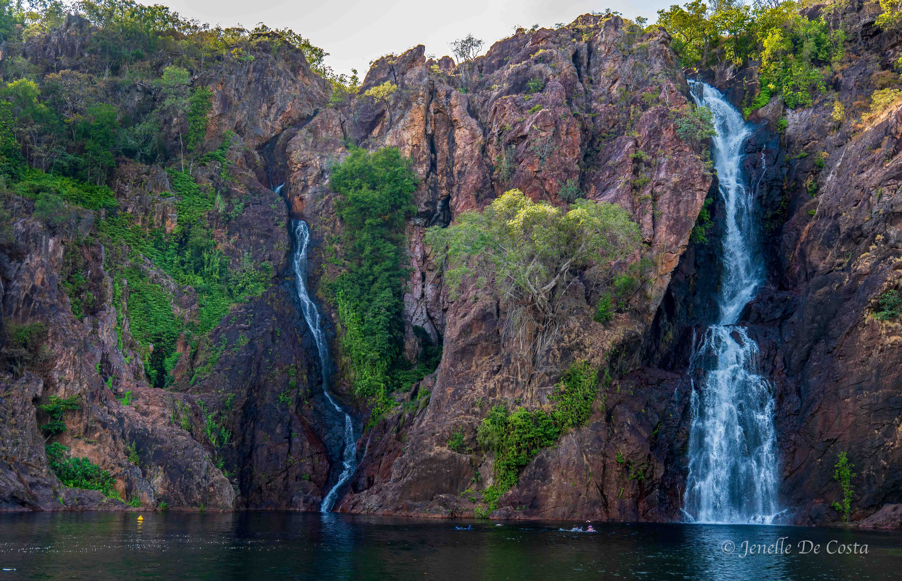

We left the Camooweal billabong early this morning because we decided to drive the 471km to
Tennant Creek today. We had
planned to stop at the Barkley Homestead but the caravan park has been battling a colony of
flying fox in it's trees
so we decided to give it a miss...
15-06-2025

Karlu Karlu
Iconic central Australian landscape. The name "Devils Marbles" is from a quote by one of the
Overland Telegraph explorers
who wrote "This is the Devil's country; he's even emptied his bag of marbles around the
place"...
17-06-2025

Katherine
Our next sightseeing stop is Katherine, 700km north of Tennant Creek. This means two days
driving with little or no
sightseeing. Not that there is much to see. Just wide open plains, scruby plains, low, red,
rocky ranges and sparse
towns...
21-06-2025
Kakadu
We spent the day driving north from Katherine, turned right at Pine Creek (after a fuel and
birding stop) and headed east
into Kakadu. Our first stop for a couple of nights was Cooinda Lodge close by to Yellow
Water...
26-06-2025
Kakadu - Ubirr
Up early, leaving Yellow Water we are headed east to see the Ubirr Cave Paintings.
26-06-2025
Adelaide River Crocs
One last stop in the Kakadu region before we head to the big smoke of Darwin. We are up early
for the Jumping Croc cruise on the Adelaide River.
30-06-2025

Darwin
We roll into Darwin for a week stay. Jenelle had been here 50 years ago for the afternoon
while her ship to Singapore
and London was in port. This is the first visit to Darwin for John. What will we find?
30-06-2025

Territory Day
We had no idea how big Territory day is. When we first arrived in Darwin we saw advertising
everywhere for fireworks.
Signs screaming "Order your fireworks now". Hmmm, that's interesting we thought...
1-07-2025
The Morning After
Territorians reportedly spent millions on fireworks for cracker night and we totally believe
it. The aftermath clearly demonstates why fireworks are banned in other states...
2-07-2025

Litchfield National Park
Time to leave Darwin and head towards Western Australia. First stop, for couple of days, is to
visit the sites of Litchfield
National Park just south of Darwin.
4-07-2025
Victoria River Region
We are starting to head west again today. Leaving Katherine heading towards Western Australia. It is a bit over 500km from Katherine
to Kununurra (just on the other side of the border). The two day drive will take us across the mighty Victoria River region.